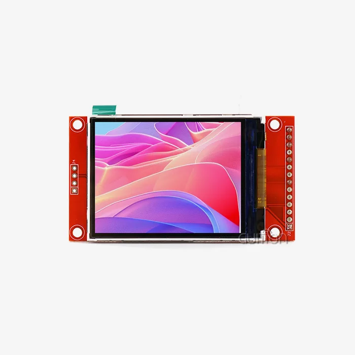

JC2432S024N
Guition · Tft lcd 2.4 module
JC2432S024N is a 2.4" 240x320 ESP32 display board by Guition based on the none (bare display).
Features, ports & interfaces
- SPI display (4-wire)
- microSD (TF) card slot
Specifications
| Parameter | Value | Source |
|---|---|---|
| Screen size | 2.4" | source |
| Resolution | 240x320 | source |
| Shape | Rectangular | |
| Display interface | SPI | source |
| Display driver | ILI9341 | source |
| Touch | None | source |
| MCU family | none (bare display) | |
| Category | SPI Display Module | |
| Dimensions | 77.1mm (L) × 42.7mm (W) | source |
| Expansion / IO | SD card slot for expansion | source |
| Interface detail | 4-wire SPI serial | |
| Vendor | Guition |
Official links & documentation
Files
Offline copies are available on the interactive page.